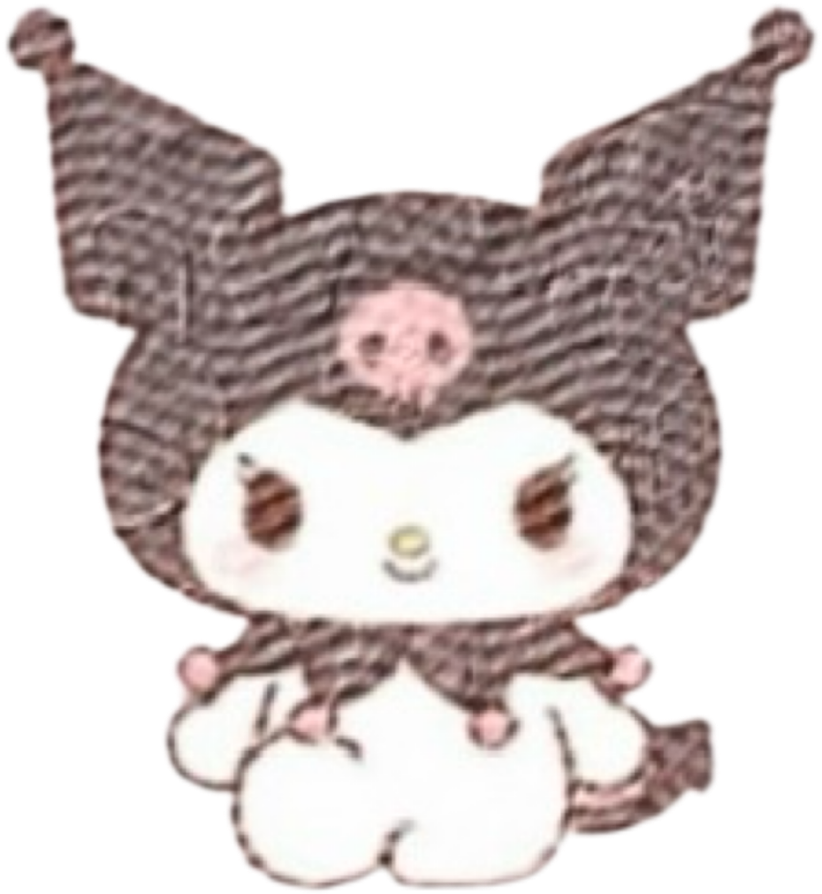
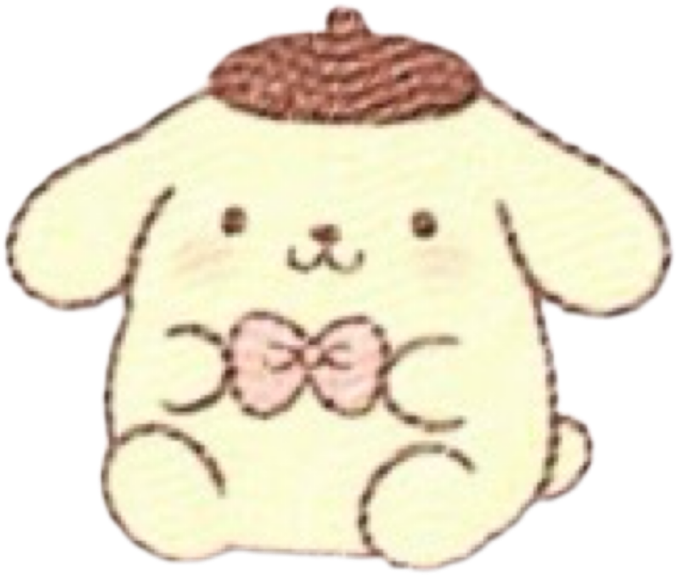
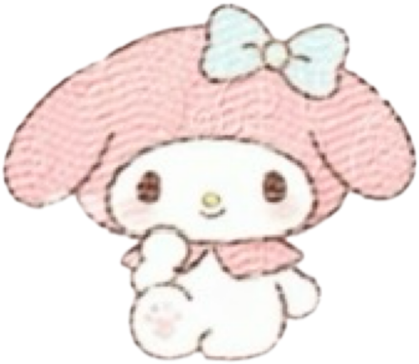



Interdisciplinary Media Arts & Practice Portfolio
Exploring the boundaries between visual storytelling, spatial installation, moving image, and creative computing.
Photography series focusing on composition, light, emotion, and visual narrative.
The Dilemma project explores the current situation of women losing their own lives in marriage through experimental photography. The work uses a cage to symbolize the bondage of marriage to women, and uses a plastic baby doll to satirize the irresponsibility of some men in family life. The project reveals the invisible pressure and unequal status that many women bear in marriage, and calls for attention to the problem that their efforts are often ignored. At the same time, it also reflects the social phenomenon of the decline in marriage rates, and triggers the audience's thinking about the value of marriage and gender equality.
In today's fast-paced life, people often place their empty souls on certain objects for comfort and dependence. However, over-reliance can easily lead to escapism and over-idealization. Objects can give us warmth and comfort for a while but they will leave us one day. We need to learn to be strong inside and face reality. In this project, I photographed several objects that people around me are emotionally attached to, and printed them out as a notice of lost property and pasted them in some unlikely places. The point of doing this is to show by contrast that these items are not dependent to people.
After my parents' divorce, I felt the drastic change in my life and the absence of a male role in my family. I often felt a lack of fatherly love and emotional support, which made me feel very insecure. For this project I used tape and number plates to simulate the “scene of the crime”- the disappearing father to show my current life. However, I was not defeated by my parents' divorce, and over time I learned to accept my emotions, focus on myself, and understand my parents and each other. Even though my father is no longer around, the love continues. I tried to assemble these "clues" into a clue board, trying to find traces of my father. However, in the end, it was abandoned in a closed storage room, along with my blocked memories of my father.


This photography project explores loneliness through the ordinary moments of my daily life as an international student living away from home for the first time. Through quiet campus landscapes, personal spaces, video calls with family, and symbolic images of isolated objects, I transformed an initially mundane visual record into an intimate reflection on solitude. The closely arranged photographs suggest the gesture of embracing oneself, expressing how I gradually learned to accept loneliness, connect with my inner self, and grow through the experience.
This photography project examines how social media and rigid beauty standards intensify appearance anxiety among women. Through images of restrictive clothing, uncomfortable shoes, extreme dieting, cosmetic procedures, and irritating beauty products, I make visible the physical and psychological pain that is often normalized or left unspoken. By rendering most of each image in black and white while highlighting areas of discomfort in red, I direct attention to the hidden costs of conforming to unrealistic ideals. The project encourages viewers to question conventional beauty standards and prioritize bodily comfort and self-acceptance over external approval.


This still-life photography project uses tarot cards to explore how people search for answers and emotional reassurance during moments of uncertainty. Rather than serving merely as photographic props, the cards function as mirrors that reflect our inner thoughts and emotions. The seven-image series unfolds through three paired visual narratives, preceded by a close-up image that introduces the story. Dark tones establish an introspective atmosphere, while stones symbolize tears and the emotional difficulty of searching for direction. Although tarot may provide comfort and temporary guidance, the project suggests that we should not depend on it completely—the answers we seek must ultimately come from within.
Bridging 3D physical spaces, wearable forms, sculptural materials, and media environments.
This wearable sculpture transforms my childhood dream of becoming a mermaid into an exploration of sacrifice and confinement. The tail’s restrictive, unfinished structure reveals the discomfort hidden beneath a beautiful fantasy. Inspired by Andersen’s The Little Mermaid, the work reflects how crossing boundaries and pursuing transformation often require surrendering freedom, comfort, and part of oneself.
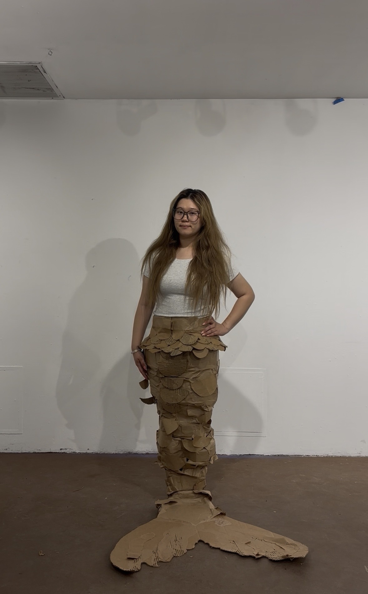
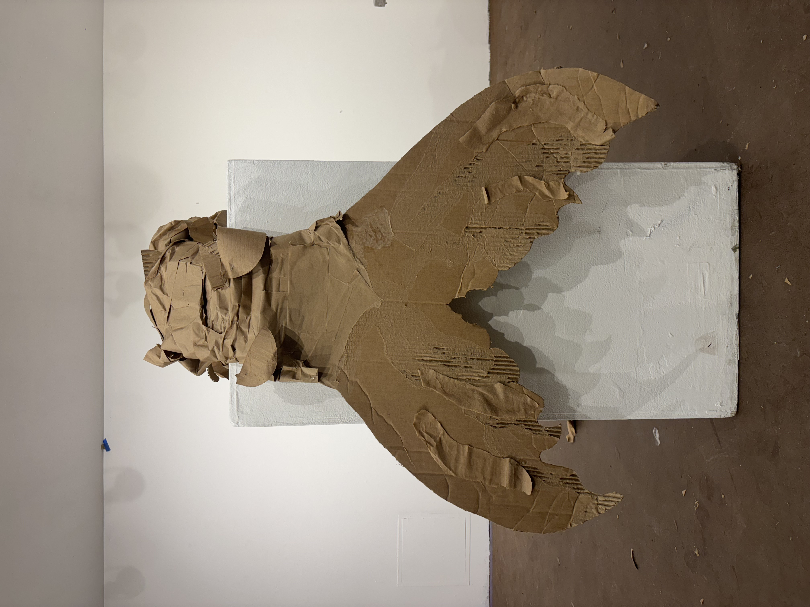
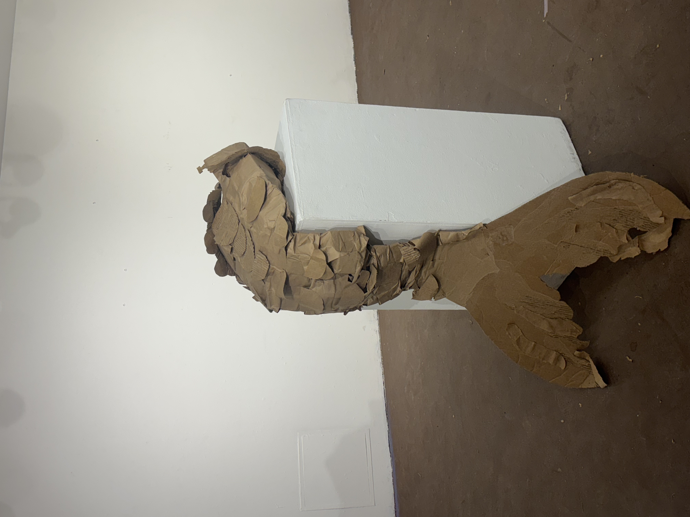
This fiber sculpture explores my childhood memories before my parents’ divorce. The carousel represents warmth and happiness that can no longer be recovered, while its fragmented fabric, solitary horse, and circular movement suggest loneliness and emotional entrapment. Through its soft, childlike appearance, the work contrasts the tenderness of nostalgia with the sadness beneath it.
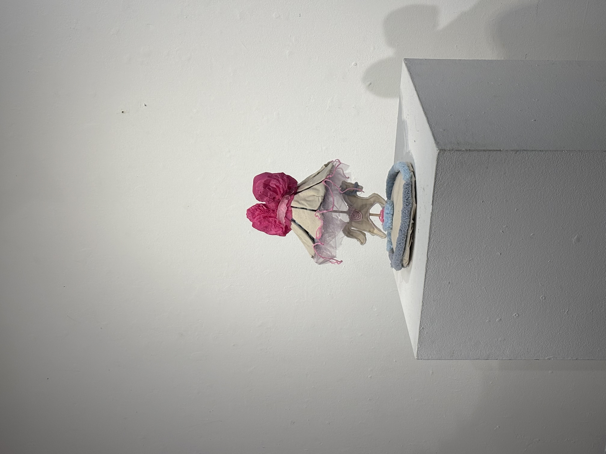
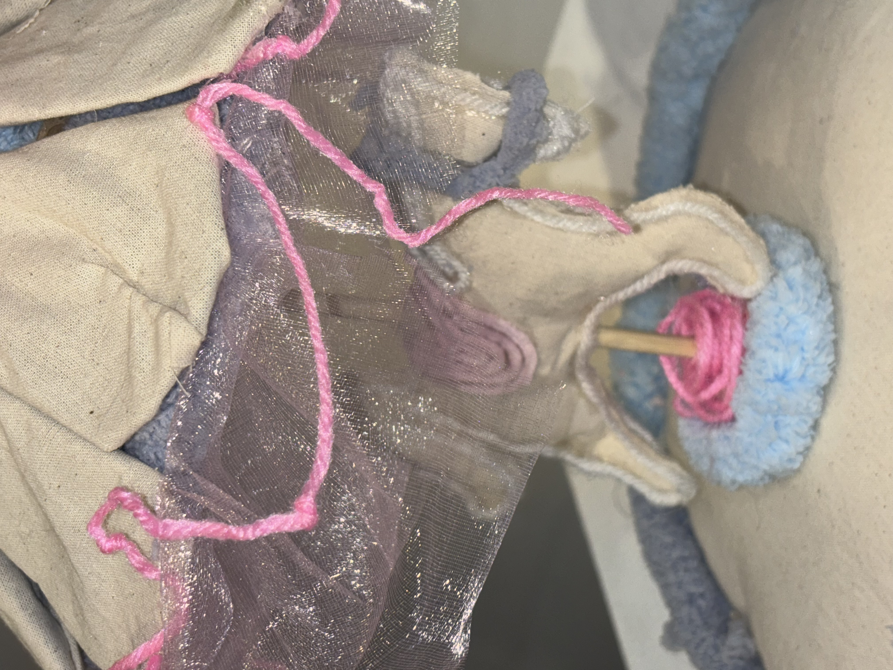
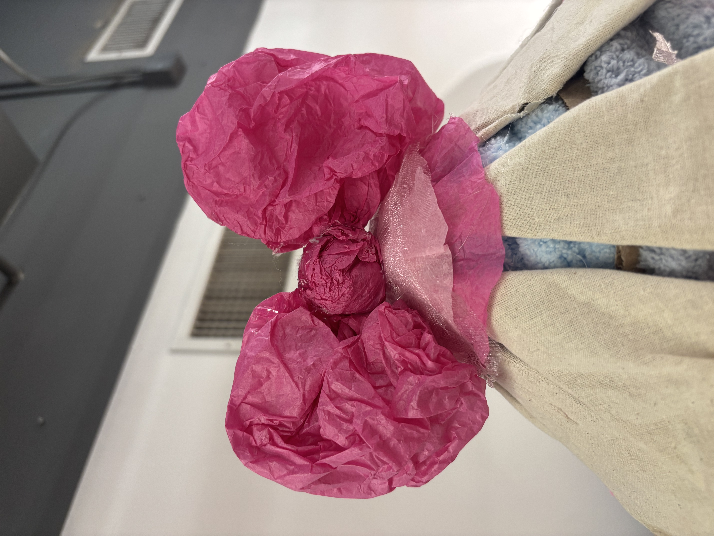
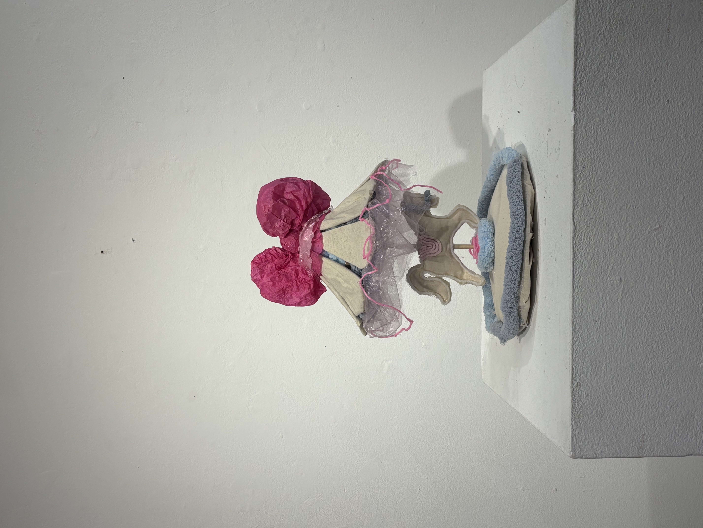
This clay sculpture explores the natural cycle of decay and renewal through lily-of-the-valley flowers. Cracked petals and fallen blossoms represent death and return to the earth, while newly blooming flowers suggest regeneration. By allowing the clay’s natural deterioration to shape the work, the piece transforms material fragility into a reflection on the continuity of life.
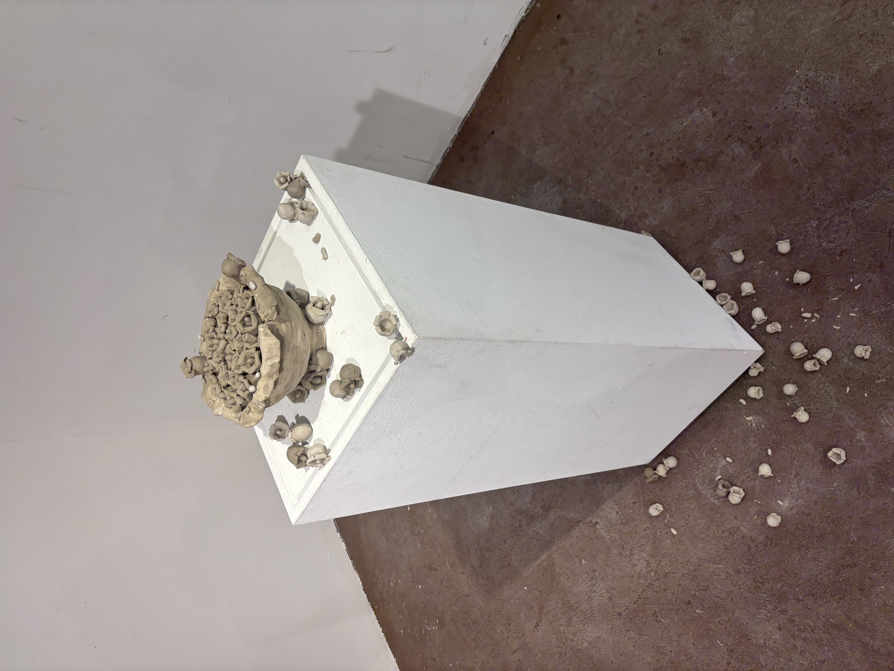
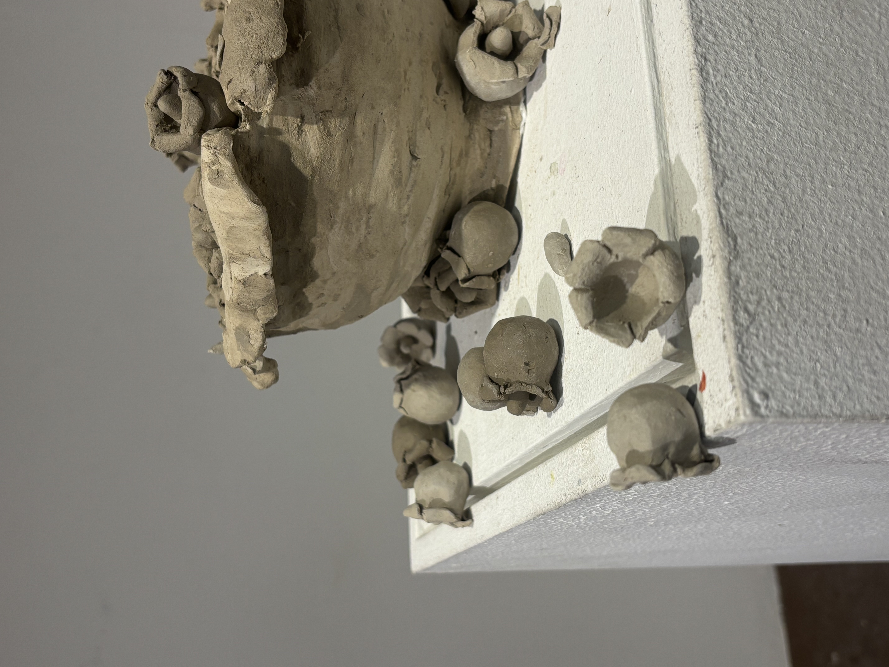
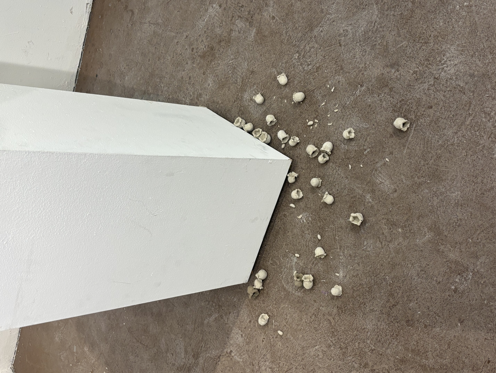
This collaborative sculpture uses a giant tea bag to explore cultural fusion through our different relationships with tea. My contribution focused on milk tea as a contemporary adaptation of traditional tea culture and a symbol of my generation. By combining our personal experiences within one form, the work shows how distinct cultural perspectives can coexist and create a shared identity.
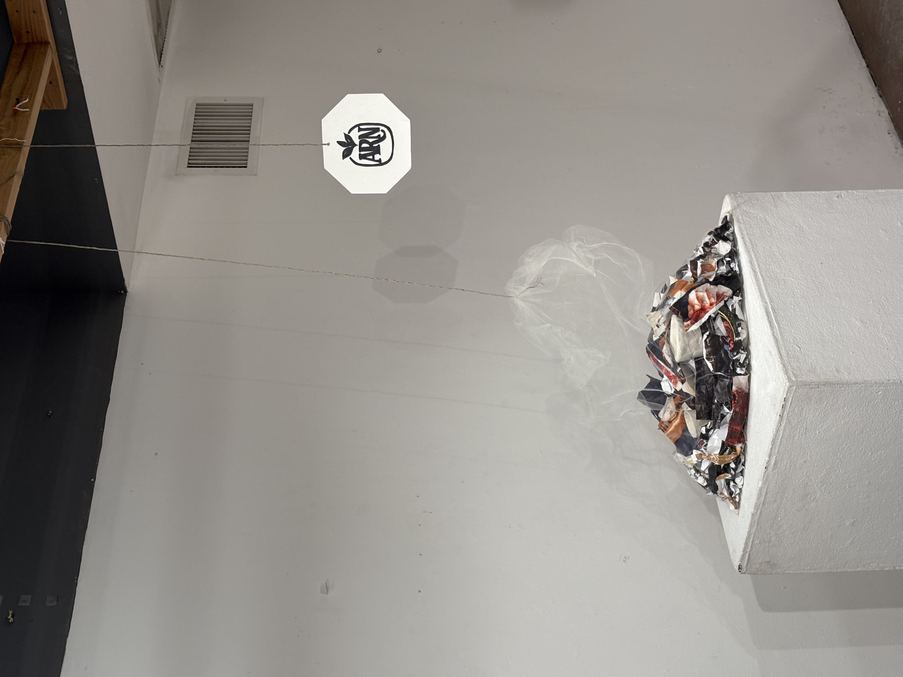
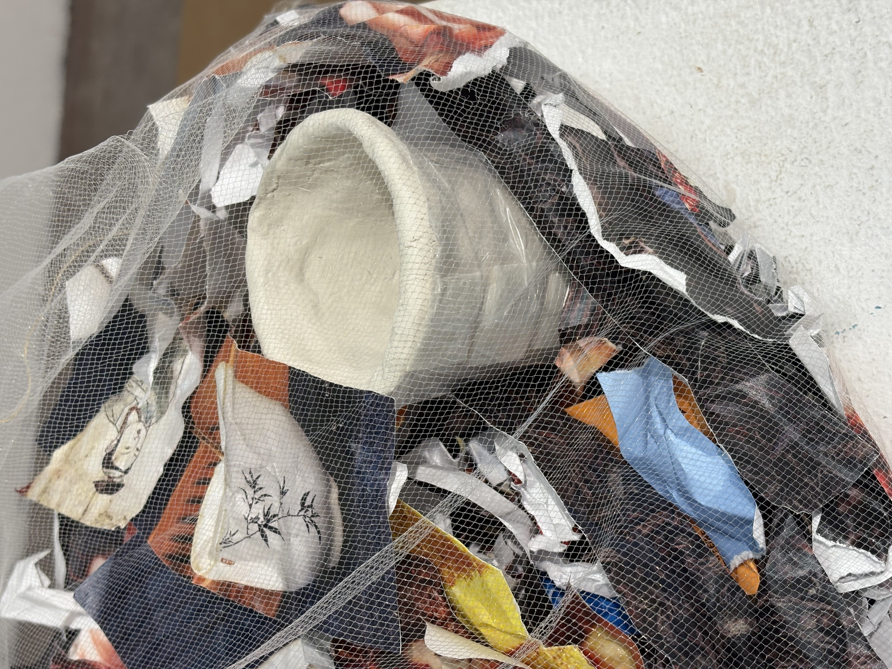
The inspiration for the project 'Invisible Black' came from the hair loss that occurs everywhere in the house and the hair that falls out in the shower. Advertisements for hair transplants flooded the streets and social media, spreading the anxiety of hair loss even further, and it's getting younger and younger. Whenever I look at my hair that falls out, I am reminded of the unspeakable pain in my life, and these strands are like evidence of the scars I have experienced. I tried to cover up the most commonly used objects in my life with hair, blurring their own shape, color, function, using hair visualization as a metaphor for the sorrow I have experienced.
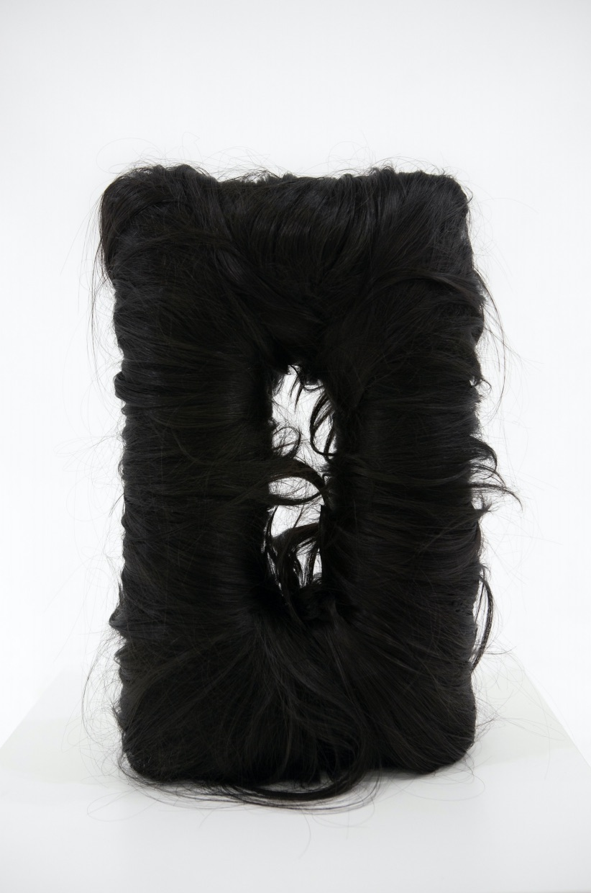
Dull pain, this delicate and indescribable feeling runs through women's daily lives. From the slightly stuffy feeling of restraint on the fingertips after manicure, to the slight friction when wearing cosmetic contact lenses, to the pressure and itching of the skin caused by the waist corset, these subtle discomforts are ignored because of their subtlety, and eventually integrated into life and become a commonplace. This project visualizes this "hidden pain" in the form of an experimental short film, explores the discomfort and repression that contemporary women endure in order to cater to social aesthetic standards, and arouses attention and reflection on this hidden problem.
Cinematic storytelling, camera operation, and time-based media experiments.
This was a teamwork piece and my position on the team was as a photographic assistant. This story is about the power of kinship and the love and resilience of human nature in an impoverished environment. It shows the selflessness and sacrifice of affection through the relationship between the little boy and his grandmother. This kind of love transcends the limitations of material conditions and is an unconditional giving. There is also the choice and persistence of love: the young boy's persistence symbolises mankind's instinctive desire for true love. This choice transcends rationality and is a pure expression of emotion, highlighting the irreplaceability of affection. The short film can trigger concern and reflection on the lower strata of society—it calls on people to pay attention to the disadvantaged and understand the complex human nature and emotional conflicts brought about by poverty.
An experimental video version of the video installation project, visualizing the subtle, hidden pain women endure daily—exploring the physical discomforts and social pressures normalized under conventional aesthetic standards.
This video explores weight anxiety and the emotional power of numbers on a scale. Through repeated weigh-ins, removing clothing, and exaggerated humor, it reveals how temporary external factors can distort weight measurements and control our emotions. The private dorm setting further reflects how this anxiety often emerges in moments of solitude.
This video explores information overload caused by constant phone notifications. By showing everyday activities repeatedly interrupted by alerts, it reveals how digital information fragments our attention. In the ending, notification sounds continue even after I throw the phone away, emphasizing the overwhelming and seemingly inescapable presence of digital communication.
Explorations in creative technology, web interaction, and narrative systems.
A therapeutic web platform designed for young adults experiencing transitional uncertainty. Featuring interactive generative rain visuals, immersive audio ambient controls, and an anonymous message board for shared reflection.
Hi! I'm Angelina Sun, an interdisciplinary creator passionate about blending traditional visual arts with emerging digital technologies.
Starting from a foundation in lens-based photography, my practice evolved into spatial installation, video production, and active exploration in creative coding. I am continuously drawn to how media technologies can extend human emotions and construct therapeutic, narrative-driven interactive experiences.
Seeking to transfer into the Media Arts + Practice (MA+P) program, I aim to deepen my technical expertise, engage with immersive environments, and expand my artistic boundary in human-computer interaction.